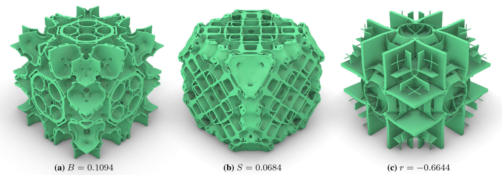
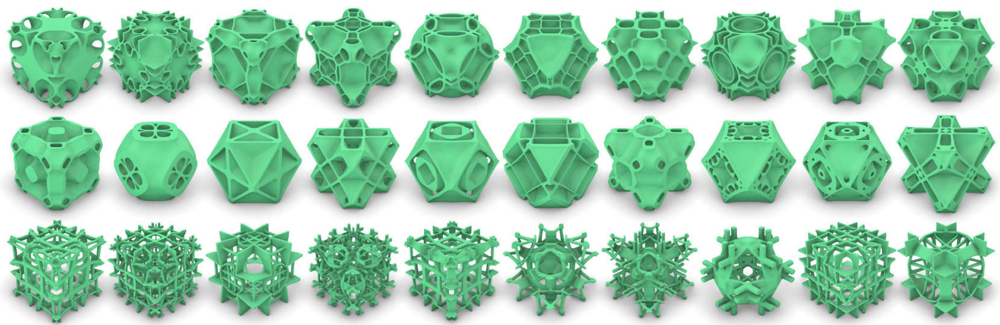
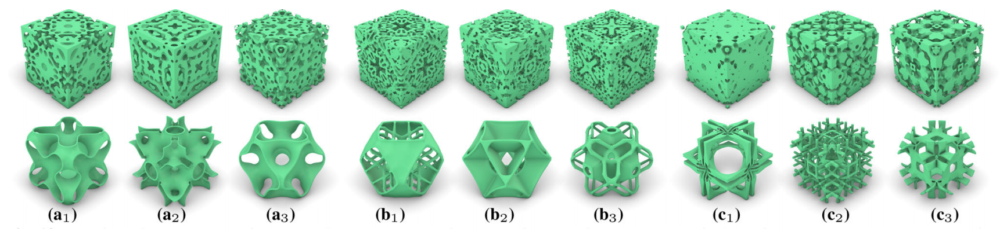

Abstract
We propose a high-performance GPU solver for inverse homogenization problems to design high-resolution 3D microstructures. Central to our solver is a favorable combination of data structures and algorithms, making full use of the parallel computation power of today’s GPUs through a software-level design space exploration. This solver is demonstrated to optimize homogenized stiffness tensors, such as bulk modulus, shear modulus, and Poisson’s ratio, under the constraint of bounded material volume. Practical high-resolution examples with 5123 ≈ 134.2 million finite elements run in less than 40 seconds per iteration with a peak GPU memory of 9 GB on an NVIDIA GeForce GTX 1080Ti GPU. Besides, our GPU implementation is equipped with an easy-to-use framework with less than 20 lines of code to support various objective functions defined by the homogenized stiffness tensors.
Major contradiction: Computational efficiency/memory storage for large-scale optimization problems vs. computational accuracy of the model.
A reviewer commented, “I believe that this manuscript will ultimately be of great value to the readers of SAMO, and the broader topology optimization community!”
Keywords: Inverse homogenization problems; microstructure design; high resolution; GPU optimization.
Motivation
We aim to use the parallel computation power of today’s GPUs for time- and memory-efficiently solving large-scale IHPs under periodic boundary conditions with the density representation. However, it is challenging to make full use of the computing resources of GPU to realize the solver. The reasons are twofold:
- Since the solver contains multiple steps with different computational profiles, the choice of data structures and algorithms should be considered globally to be suitable for every step.
- As the GPU memory is limited, the memory usage should be reduced to adapt to high resolution while ensuring accuracy and high efficiency.
Methods
Data structure tailored to solve IHPs. For each vertex of each level’s mesh, we store the numerical stencil, the displacement, the force, and the residual in the multigrid implementation. The numerical stencil consists of 27 matrices of dimension 3 × 3, each of which corresponds to one adjacent vertex. By employing mixed floating-point precision, a balance between computational accuracy and performance can be achieved. Nodal vectors are all stored in the Structure of Array (SoA) format. The numerical stencils are stored in Array of Structure (AoS) format. In our GPU implementation, we pad a layer of vertices and elements around the mesh.
Dedicated multigrid solver. Due to the loss of precision caused by the mixed-precision scheme and the high resolutions, the multigrid solver may diverge with a numerical explosion. We find in practice that these situations may be caused by insufficient Dirichlet boundary conditions and no materials at corners during optimization. To handle such a problem, we remove the component belonging to the numerical stencil’s null space from the restricted residual before solving the system on the coarsest mesh.
Results
We optimize bulk modulus, shear modulus, and negative Poisson’s ratio. The cubic domain uses 8-node brick elements. Symmetry is essential for designing isotropic materials. We predefined three symmetry types:
- reflect3: the reflection symmetry on three planes {x = 0.5, y = 0.5, z = 0.5} of the cube domain.
- reflect6: the reflection symmetry on six planes {x = 0.5, y = 0.5, z = 0.5, x + y = 0, y + z = 0, z + x = 0} of the cube domain.
- rotate3: rotation symmetry means that the structure is invariant under the rotation of 90° around the x, y, z axes that pass through the cube domain’s center, as same under their compositions.

We use different initial density fields for optimization. Different initial density fields lead to different results, which are different local optimal solutions. Trigonometric functions are adopted to cover various initial density fields.

We implement the multi-CPU framework Aage et al. (2015) and conduct the experiments on a cluster with a total of 9 nodes, each equipped with two Interl Xeon E5-2680 v4 28-core CPUs and 128GB memory connected by Intel OPA. The final structures and moduli obtained by both frameworks are very similar. The average time of each iteration for the Multi-CPU framework is around 40.0 s, while our framework achieves a significantly reduced average time cost of 4.4 s. Users can optimize material properties according to their own goals through our framework.
BibTeX
@article{zhang2023Micro,
title = {An Optimized, Easy-to-use, Open-source GPU Solver for Large-scale Inverse Homogenization Problems},
author = {Zhang, Di and Zhai, Xiaoya and Liu, Ligang and Fu, Xiao-Ming},
journal = {Structural and Multidisciplinary Optimization},
volume = {66},
number = {207},
year = {2023},
doi = {10.1007/s00158-023-03657-y}
}